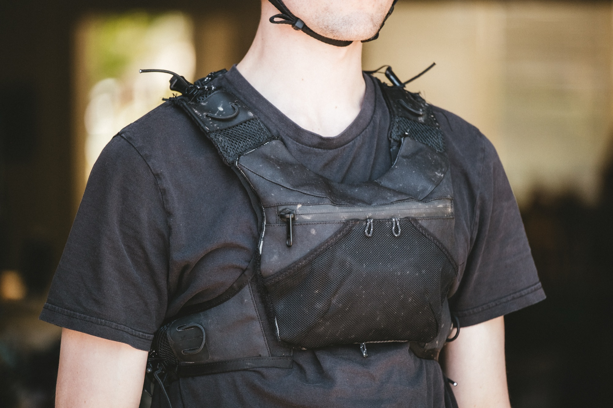
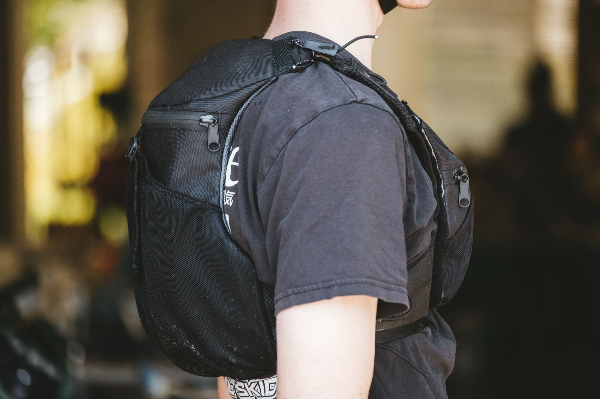
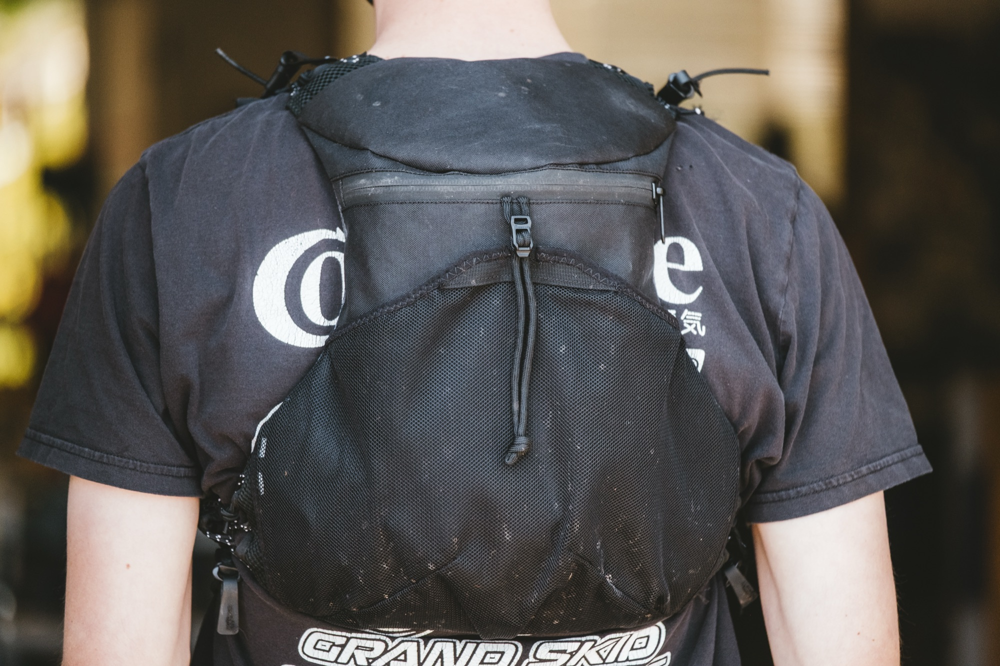
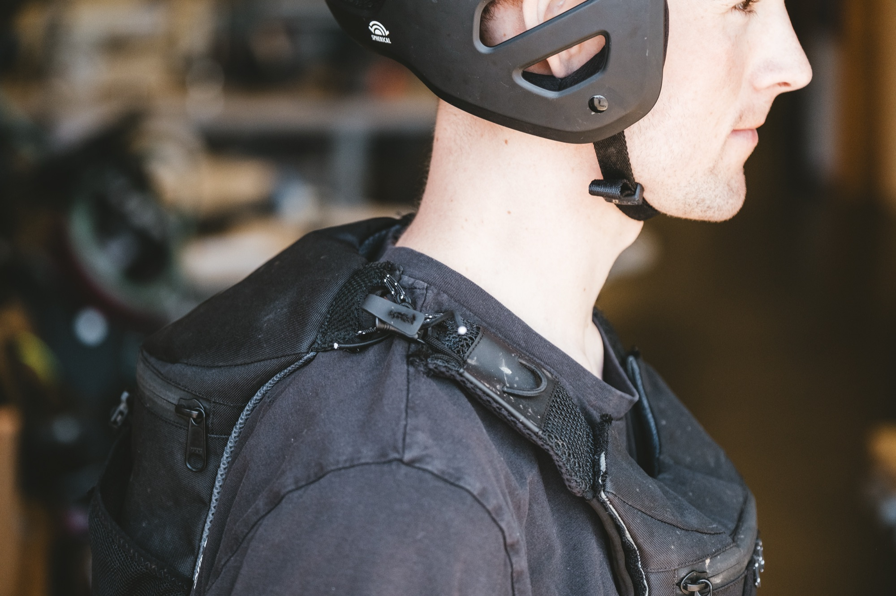

The Problem
Trail and enduro riding demands carrying tools, nutrition, water, and clothing — securely, accessibly, and without restricting movement. Hydration vests come closest but push storage to the back, making it inaccessible on the move. Fanny packs bounce and shift. In-bike storage is buried and slow to access.
The vest moves storage to the front of the body where it stays put, stays accessible, and doesn't interfere with riding, running, or skiing. The goal: balanced, secure, and accessible storage.




Digital Pattern Making
Each iteration was developed digitally in CLO 3D before cutting any material — simulating fit, shape, and drape on a virtual body. This compresses the development cycle significantly: problems that would take a physical toile to discover get caught in simulation first.
Patterns are exported from CLO, cleaned up in Illustrator, and cut on a laser cutter for precision. Construction happens on a sewing machine, with each physical build informing the next digital revision.
Tools
- CLO 3D
- Illustrator
- Sewing Machine
- Laser Cutter
Materials
- [Shell fabric]
- [Liner fabric]
- [Hardware]
Status
- First prototype complete
- Second iteration planned


Iteration
Four prototypes in. The first was rectangular — bad shape, bad fit, poorly placed side straps that bounced. The second improved shape and fit, patterned in Seamly. The third moved to CLO, refining fit and shape further with better straps, though the construction was overly complex. The fourth simplified significantly: best fit to date, integrated closure, better straps.
A fifth prototype is in progress — continuing to refine shape, simplify construction, and improve the closure system. The vest works well for trail and enduro riding and has potential for gravel. The core concept is proven; the work now is refinement.